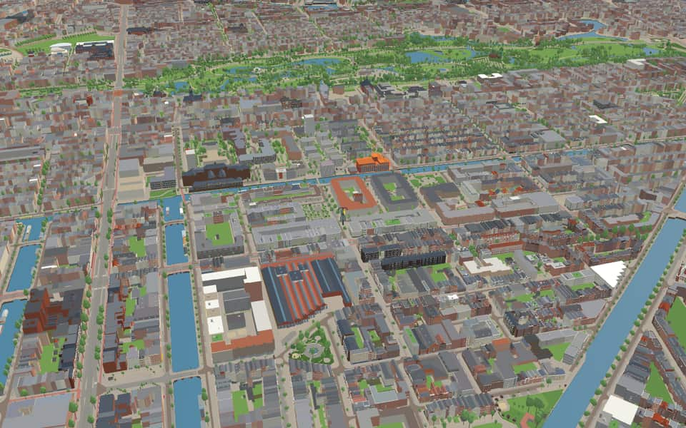
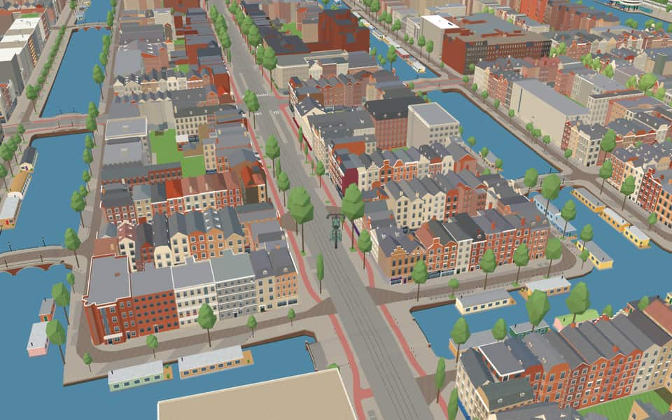
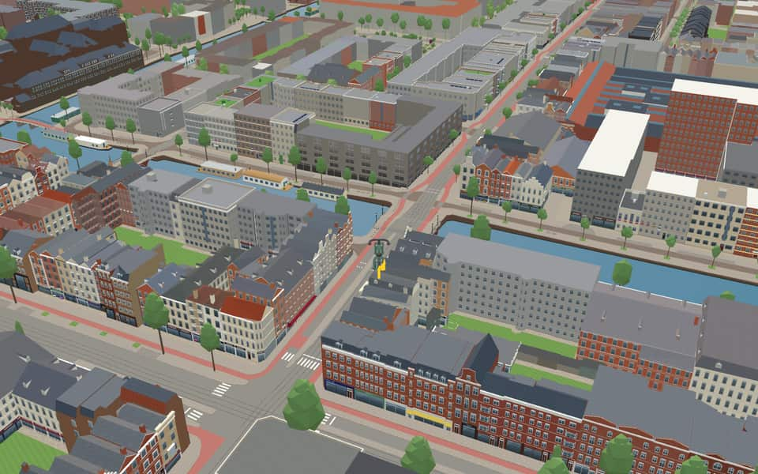
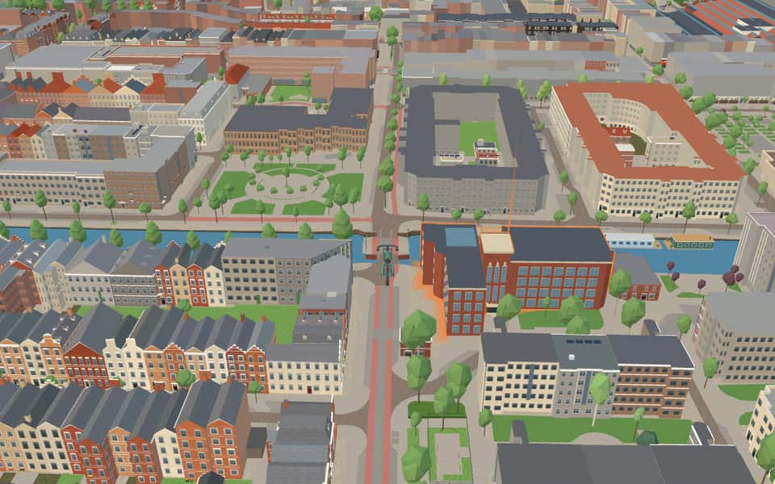

Quarter · Amsterdam
Van Lennepbuurt
The Van Lennepbuurt is a neighbourhood in Amsterdam-West, bounded by the Kinkerstraat, the Singelgracht, the Jacob van Lennepkanaal and the Kostverlorenvaart. nl.wikipedia.org
The name. Named after the Van Lennepstraat, named after the writer, linguist and politician Jacob van Lennep (1802–1868). Its streets are named after 19th-century Dutch writers. nl.wikipedia.org

In the game
Frames from a ride through Van Lennepbuurt.



6 more photos of Van Lennepbuurt

.jpg){kind=link}

.jpg){kind=link}

_Amsterdam.jpg){kind=link}


Built here
Buildings modelled one by one for the ride.
- No picture yet
Kinkerstraat 1 to 29 (11 houses)
Bilderdijkstraat 199 to 203 (corner) (4 houses)
- No picture yet
Bilderdijkstraat 169-171 (Mensink) to 175 (3 houses)
- No picture yet
Bilderdijkstraat 202 to 198 (3 houses)
- No picture yet
Bilderdijkstraat (1894 arched windows, pedimented dormer)
- No picture yet
Bilderdijkstraat (1894 yellow brick, scaffolded)
Kinkerstraat 89-105, Amsterdam-West (Oud-West)
1987 urban-renewal block opposite De Hallen, five storeys of grey-beige rendered panels with white window bands, cantilevered balconies and yellow-tiled stair towers over a shop ground
Did you know
Trivia the ride can show you here.
- In December 1876 the city decided to lay the Jacob van Lennepstraat across the ‘landje van Mina’, where horses grazed. Wikipedia (translated from Dutch)
- Until the bridge to the Kinkerstraat was ready in 1880, a little ferry served the area. Wikipedia (translated from Dutch)
- Houseboats line the Jacob van Lennepkanaal, whose quays are the Jacob van Lennepkade. Wikipedia
- The Hennetjesbrug opened in May 1889 as a lift bridge, as the canal was a supply route for the Marnixstraat vegetable market. Wikipedia (translated from Dutch)
- The Abdellah Zakibrug's nameplate was unveiled in April 2024 by the mayors of Amsterdam and Casablanca. Wikipedia (translated from Dutch)
- Abdellah ZakibrugA British stray bullet hit a building on the northeastern slope during World War II in 1940. nl.wikipedia.org
- Abdellah ZakibrugMayors Femke Halsema and Nabila Rmili unveiled the nameplate and information board in April 2024. nl.wikipedia.org
- HennetjesbrugThe old movable structure was later reused as a temporary bridge for what became the Jacob Heinen Bridge. nl.wikipedia.org
- BilderdijkgrachtCatholics once bought bread at the Assumptio bakery complex opposite a warehouse entrance. nl.wikipedia.org
- BilderdijkgrachtThe canal honors Willem Bilderdijk, a noted poet and historian. nl.wikipedia.org
- Da CostagrachtGerman occupiers forced a street name change on August 14, 1942, targeting names of Jews and royalty. nl.wikipedia.org
- Da CostagrachtFour bridges span the water at De Clercqstraat, Potgieterstraat, Kinkerstraat, and Jacob van Lennepstraat. nl.wikipedia.org
- Jacob van LennepkanaalThe name Jacob van Lennepkanaal was officially established by council resolutions in 1892 and 1896. en.wikipedia.org
- Jacob van LennepkanaalA never-built metro line to Osdorp was once planned to run directly underneath this canal. en.wikipedia.org
8 more facts
- KostverlorenvaartThe name Kostverlorenvaart (Lost Cost) arose because the sluice gates became unusable, wasting money. nl.wikipedia.org
- KostverlorenvaartAmsterdam fiercely opposed a 1413 plan to dig locks that might let enemies flood the city. nl.wikipedia.org
- KostverlorenvaartA turnaround path called an overtoom was laid on a dam in 1515 to allow small ships to pass. nl.wikipedia.org
- SingelgrachtThe name Singelgracht derives from the Dutch word omsingelen, meaning to surround. en.wikipedia.org
- SingelgrachtStreets like Marnixkade line the inside while Nassaukade runs along the outside. en.wikipedia.org
- NassaukadeNearby Nassauplein and two Nassau streets share the same royal namesake origin. nl.wikipedia.org
- NassaukadeA movable bridge over the Kattensloot was renovated in 1954. nl.wikipedia.org
- NassaukadeEight municipal monuments line this street, including numbers 17 and 18. nl.wikipedia.org
Names on the map
Where the canal, bridge and street names come from.
Canals and water
- BilderdijkgrachtWillem Bilderdijk (1756-1831), poet and historian. Bilderdijk went against the complacent spirit of his time, which made him a highly controversial figure. The name Bilderdijkstraat originally applied as far as the Vondelstraat. That section, from the Jacob van Lennepkade onwards, is now called Eerste Constantijn Huygensstraat (council decision of 21 March 1894). The Bilderdijkpark (park and street) was laid out on the site of the cemetery of the former Roman Catholic church 'De Liefde'.
- Da CostagrachtIsaäc da Costa (1798-1860), Amsterdam lawyer, poet and prose writer of Portuguese-Jewish descent, who converted to Christianity.
- Jacob van LennepkanaalProse writer (1802-1868), mainly of historical novels, among them 'De roos van Dekama' and 'Ferdinand Huyck'.
- KostverlorenvaartAfter the Kostverlorenwetering, dug in 1413 to give a shorter waterway to the Haarlem and Leiden lakes. According to some, the name Kostverloren (cost lost) comes from the heavy legal costs of this channel, which was a bone of contention between Amsterdam and Haarlem until 1609. The name Kostverloren occurs in several places in the Netherlands.
- SingelgrachtA singel is a stretch of water or a road along the outer edge of a town. In Amsterdam the Singel (Amsterdammers say 'het Singel') formed the city boundary in the second half of the fifteenth century, inside which the walls and gates were built. At that time the moat was called 't Singel or the Stedegracht (now the Singel, Kloveniersburgwal and Geldersekade). Today's Singel has kept the old name. In the seventeenth century the city government did introduce the name Koningsgracht for it, but that name did not stick.
Bridges
- Abdellah ZakibrugAbdellah Zaki (ntb 1936 – Lelystad, 2017) was a Dutch-Moroccan artist with a love of history and culture. His work focused mostly on flowers and Amsterdam cityscapes. The naming also symbolises labour migration and the connection between two cultures.Bridge 180: a steel bridge for road traffic, dated 1892 in the city's bridge register.
- HennetjesbrugThis fixed bridge was probably once a narrow wooden chicken bridge (hennetje: little hen).Bridge 179: a steel bridge for road traffic, dated 1936 in the city's bridge register.
Streets
- BilderdijkkadeWillem Bilderdijk (1756-1831), poet and historian. Bilderdijk went against the complacent spirit of his time, which made him a highly controversial figure. The name Bilderdijkstraat originally applied as far as the Vondelstraat. That section, from the Jacob van Lennepkade onwards, is now called Eerste Constantijn Huygensstraat (council decision of 21 March 1894). The Bilderdijkpark (park and street) was laid out on the site of the cemetery of the former Roman Catholic church 'De Liefde'.
- BilderdijkstraatWillem Bilderdijk (1756-1831), poet and historian. Bilderdijk went against the complacent spirit of his time, which made him a highly controversial figure. The name Bilderdijkstraat originally applied as far as the Vondelstraat. That section, from the Jacob van Lennepkade onwards, is now called Eerste Constantijn Huygensstraat (council decision of 21 March 1894). The Bilderdijkpark (park and street) was laid out on the site of the cemetery of the former Roman Catholic church 'De Liefde'.
- BorgerstraatElias Anne Borger (1784-1820), professor at Leiden of theology and of classical history and literature. Poet and pulpit orator.
- Da CostakadeIsaäc da Costa (1798-1860), Amsterdam lawyer, poet and prose writer of Portuguese-Jewish descent, who converted to Christianity.
- Da CostastraatIsaäc da Costa (1798-1860), Amsterdam lawyer, poet and prose writer of Portuguese-Jewish descent, who converted to Christianity.
- HildebrandstraatThe pseudonym of Nicolaas Beets.
- Jacob van LennepkadeProse writer (1802-1868), mainly of historical novels, among them 'De roos van Dekama' and 'Ferdinand Huyck'.
- Jacob van LennepstraatProse writer (1802-1868), mainly of historical novels, among them 'De roos van Dekama' and 'Ferdinand Huyck'.
- Jan Pieter HeijestraatAmsterdam physician and poet (1809-1876). He founded the Society for Nursing in 1844, was for thirty years director of Toonkunst, and promoted community singing. He wrote the popular children's songs 'De Zilvervloot' (the silver fleet), 'Kabels los' and 'Vlaggelied'.
- Jan SwammerdambrugJan Swammerdam (1637-1680), anatomist and naturalist, who made important microscopic studies, preserved in his 'Bybel der natuure' (Bible of nature).
- KinkerstraatJohannes Kinker (1764-1845), poet, philosopher and lawyer in Amsterdam and The Hague. From 1817 until the Belgian Revolution of 1830 he was professor of Dutch language and literature at the new university of Liège, and argued for the unity of the northern and southern Netherlands. He was one of the first to introduce Kant's philosophy in the Netherlands, and was best known as a poet for his parodies. The street was named after him in 1881.
- KneppelhoutstraatJohannes Kneppelhout (1814-1885), pseudonym Klikspaan, writer of realistic, humorous sketches and stories.
13 more streets with a story
- LootsstraatCornelis Loots (1765-1834), Amsterdam broker who devoted himself to poetry. His poems were collected and published after his death.
- NassaukadeNamed after our royal house of Orange-Nassau. Before it was named in 1879, the quay was called Buitensingel.
- Nicolaas BeetsplantsoenMan of letters and writer (1814-1903), who as a student wrote the celebrated 'Camera Obscura' under the pseudonym Hildebrand.
- Nicolaas BeetsstraatMan of letters and writer (1814-1903), who as a student wrote the celebrated 'Camera Obscura' under the pseudonym Hildebrand.
- Oude KinkerbrugJohannes Kinker (1764-1845) was a Dutch poet, philosopher and lawyer.
- PesthuysbrugNamed after the old pest house, built in 1635 in the Stads- or Godshuispolder, at first only for plague sufferers and later also for patients with dysentery and typhus and the insane. After much rebuilding it became the Wilhelmina Gasthuis in 1891. The last part of the old pest house was demolished in 1925.
- Pieter LangendijkstraatMan of letters and playwright (1683-1756), whose works include 'Het wederzijds huwelijksbedrog' (mutual marriage deceit) and 'Krelis Louwen'. The street was first named without the first name (1900), but people sometimes corrupted that into Lange Dijkstraat.
- PostjeswegAfter the former Postjeswetering. A postje is a small freshwater fish.
- SchoolmeesterstraatNamed after the pseudonym 'De Schoolmeester' (the schoolmaster) of the Dutch poet Gerrit van de Linde (1808-1858).
- Ten KatestraatJan Jacob Lodewijk ten Kate (1819-1889), minister and poet, who also translated Goethe, Dante and Andersen. Widely read at first, he was pushed aside after the movement of the Tachtigers (the Eighties poets).
- TollensstraatHendrik Frederik Tollens (1780-1856), Rotterdam merchant who became known as a popular poet.
- Tweede KostverlorenkadeAfter the Kostverlorenwetering, dug in 1413 to give a shorter waterway to the Haarlem and Leiden lakes. According to some, the name Kostverloren (cost lost) comes from the heavy legal costs of this channel, which was a bone of contention between Amsterdam and Haarlem until 1609. The name Kostverloren occurs in several places in the Netherlands.
- VredespleintjeThe name was chosen in 2016 by local residents and refers to the theme of 'peace' (vrede), written about by at least thirteen eighteenth- and nineteenth-century writers after whom streets in the neighbourhood are named. The square used to host the Solidarity Festival, and in 2010 the festival 'Wereldburgers van Amsterdam' (world citizens of Amsterdam).